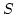
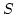
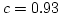
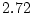
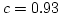
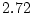
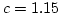
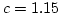

Properties
- Construct MPHFs in linear time.
- It is based on cyclic random graphs. This makes it faster than the CHM algorithm.
- The resulting MPHFs are not order preserving.
- The resulting MPHFs are more compact than the ones generated by the CHM algorithm and can be stored in 4cn bytes, where c is in the range [0.93,1.15].
History
At the end of 2003, professor Nivio Ziviani was finishing the second edition of his book. During the book writing, professor Nivio Ziviani studied the problem of generating minimal perfect hash functions (if you are not familiarized with this problem, see [1][2]). Professor Nivio Ziviani coded a modified version of the CHM algorithm, which was proposed by Czech, Havas and Majewski, and put it in his book. The CHM algorithm is based on acyclic random graphs to generate order preserving minimal perfect hash functions in linear time. Professor Nivio Ziviani argued himself, why must the random graph be acyclic? In the modified version availalbe in his book he got rid of this restriction.
The modification presented a problem, it was impossible to generate minimal perfect hash functions for sets with more than 1000 keys. At the same time, Fabiano C. Botelho, a master degree student at Departament of Computer Science in Federal University of Minas Gerais, started to be advised by Nivio Ziviani who presented the problem to Fabiano.
During the master, Fabiano and Nivio Ziviani faced lots of problems. In april of 2004, Fabiano was talking with a friend of him (David Menoti) about the problems and many ideas appeared. The ideas were implemented and a very fast algorithm to generate minimal perfect hash functions had been designed. We refer the algorithm to as BMZ, because it was conceived by Fabiano C. Botelho, David Menoti and Nivio Ziviani. The algorithm is described in [1]. To analyse BMZ algorithm we needed some results from the random graph theory, so we invited professor Yoshiharu Kohayakawa to help us. The final description and analysis of BMZ algorithm is presented in [2].
The Algorithm
The BMZ algorithm shares several features with the CHM algorithm.
In particular, BMZ algorithm is also
based on the generation of random graphs  , where is in
one-to-one correspondence with the key set  for which we wish to
generate a minimal perfect hash function.
The two main differences between BMZ algorithm and CHM algorithm
are as follows: (i) BMZ algorithm generates random
graphs with and , where ,
and hence
, where is in
one-to-one correspondence with the key set  for which we wish to
generate a minimal perfect hash function.
The two main differences between BMZ algorithm and CHM algorithm
are as follows: (i) BMZ algorithm generates random
graphs with and , where ,
and hence  necessarily contains cycles,
while CHM algorithm generates acyclic random
graphs with and ,
with a greater number of vertices: ;
(ii) CHM algorithm generates order preserving minimal perfect hash functions
while BMZ algorithm does not preserve order. Thus, BMZ algorithm improves
the space requirement at the expense of generating functions that are not
order preserving.
necessarily contains cycles,
while CHM algorithm generates acyclic random
graphs with and ,
with a greater number of vertices: ;
(ii) CHM algorithm generates order preserving minimal perfect hash functions
while BMZ algorithm does not preserve order. Thus, BMZ algorithm improves
the space requirement at the expense of generating functions that are not
order preserving.
Suppose  is a universe of keys.
Let
is a universe of keys.
Let  be a set of
be a set of  keys from .
Let us show how the BMZ algorithm constructs a minimal perfect hash function
keys from .
Let us show how the BMZ algorithm constructs a minimal perfect hash function  .
We make use of two auxiliary random functions and ,
where for some suitably chosen integer ,
where .We build a random graph on ,
whose edge set is
.
We make use of two auxiliary random functions and ,
where for some suitably chosen integer ,
where .We build a random graph on ,
whose edge set is  . There is an edge in for each
key in the set of keys .
. There is an edge in for each
key in the set of keys .
In what follows, we shall be interested in the 2-core of
the random graph , that is, the maximal subgraph
of with minimal degree at
least 2 (see [2] for details).
Because of its importance in our context, we call the 2-core the
critical subgraph of and denote it by .
The vertices and edges in are said to be critical.
We let and .
Moreover, we let be the set of non-critical
vertices in .
We also let be the set of all critical
vertices that have at least one non-critical vertex as a neighbour.
Let be the set of non-critical edges in .
Finally, we let be the non-critical subgraph
of .
The non-critical subgraph  corresponds to the acyclic part
of .
We have .
corresponds to the acyclic part
of .
We have .
We then construct a suitable labelling of the vertices
of : we choose for each in such
a way that ( ) is a
minimal perfect hash function for .
This labelling can be found in linear time
if the number of edges in is at most
) is a
minimal perfect hash function for .
This labelling can be found in linear time
if the number of edges in is at most  (see [2]
for details).
(see [2]
for details).
Figure 1 presents a pseudo code for the BMZ algorithm. The procedure BMZ (, ) receives as input the set of keys and produces the labelling . The method uses a mapping, ordering and searching approach. We now describe each step.
| procedure BMZ (, ) |
| Mapping (, ); |
| Ordering (, , ); |
| Searching (, , , ); |
| Figure 1: Main steps of BMZ algorithm for constructing a minimal perfect hash function |
Mapping Step
The procedure Mapping (, ) receives as input the set
of keys and generates the random graph , by generating
two auxiliary functions , .
The functions and are constructed as follows.
We impose some upper bound  on the lengths of the keys in .
To define (, ), we generate
an table of random integers .
For a key of length and , we let
on the lengths of the keys in .
To define (, ), we generate
an table of random integers .
For a key of length and , we let
The random graph has vertex set and
edge set . We need to be
simple, i.e., should have neither loops nor multiple edges.
A loop occurs when for some .
We solve this in an ad hoc manner: we simply let in this case.
If we still find a loop after this, we generate another pair .
When a multiple edge occurs we abort and generate a new pair .
Although the function above causes collisions with probability 1/t,
in cmph library we use faster hash
functions (DJB2 hash, FNV hash,
Jenkins hash and SDBM hash)
in which we do not need to impose any upper bound on the lengths of the keys in .
As mentioned before, for us to find the labelling of the
vertices of in linear time,
we require that .
The crucial step now is to determine the value
of  (in ) to obtain a random
graph with .
Botelho, Menoti an Ziviani determinded emprically in [1] that
the value of is 1.15. This value is remarkably
close to the theoretical value determined in [2],
which is around .
(in ) to obtain a random
graph with .
Botelho, Menoti an Ziviani determinded emprically in [1] that
the value of is 1.15. This value is remarkably
close to the theoretical value determined in [2],
which is around .
Ordering Step
The procedure Ordering (, , ) receives
as input the graph and partitions into the two
subgraphs and , so that .
Figure 2 presents a sample graph with 9 vertices and 8 edges, where the degree of a vertex is shown besides each vertex. Initially, all vertices with degree 1 are added to a queue . For the example shown in Figure 2(a), after the initialization step.
| Figure 2: Ordering step for a graph with 9 vertices and 8 edges. |
Next, we remove one vertex from the queue, decrement its degree and
the degree of the vertices with degree greater than 0 in the adjacent
list of , as depicted in Figure 2(b) for .
At this point, the adjacencies of with degree 1 are
inserted into the queue, such as vertex 1.
This process is repeated until the queue becomes empty.
All vertices with degree 0 are non-critical vertices and the others are
critical vertices, as depicted in Figure 2(c).
Finally, to determine the vertices in  we collect all
vertices with at least one vertex that
is in Adj and in
we collect all
vertices with at least one vertex that
is in Adj and in  , as the vertex 8 in Figure 2(c).
, as the vertex 8 in Figure 2(c).
Searching Step
In the searching step, the key part is the perfect assignment problem: find such that the function defined by
is a bijection from to (recall ).
We are interested in a labelling of
the vertices of the graph with
the property that if and are keys
in , then ; that is, if we associate
to each edge the sum of the labels on its endpoints, then these values
should be all distinct.
Moreover, we require that all the sums ()
fall between and , and thus we have a bijection
between and .
The procedure Searching (, , , )
receives as input , , and finds a
suitable bit value for each vertex , stored in the
array .
This step is first performed for the vertices in the
critical subgraph of (the 2-core of )
and then it is performed for the vertices in (the non-critical subgraph
of that contains the "acyclic part" of ).
The reason the assignment of the values is first
performed on the vertices in is to resolve reassignments
as early as possible (such reassignments are consequences of the cycles
in and are depicted hereinafter).
Assignment of Values to Critical Vertices
The labels () are assigned in increasing order following a greedy strategy where the critical vertices are considered one at a time, according to a breadth-first search on . If a candidate value for is forbidden because setting would create two edges with the same sum, we try for . This fact is referred to as a reassignment.
Let  be the set of addresses assigned to edges in .
Initially .
Let be a candidate value for .
Initially .
Considering the subgraph in Figure 2(c),
a step by step example of the assignment of values to vertices in is
presented in Figure 3.
Initially, a vertex is chosen, the assignment is made
and is set to .
For example, suppose that vertex in Figure 3(a) is
chosen, the assignment is made and is set to .
be the set of addresses assigned to edges in .
Initially .
Let be a candidate value for .
Initially .
Considering the subgraph in Figure 2(c),
a step by step example of the assignment of values to vertices in is
presented in Figure 3.
Initially, a vertex is chosen, the assignment is made
and is set to .
For example, suppose that vertex in Figure 3(a) is
chosen, the assignment is made and is set to .
| Figure 3: Example of the assignment of values to critical vertices. |
In Figure 3(b), following the adjacent list of vertex ,
the unassigned vertex is reached.
At this point, we collect in the temporary variable all adjacencies
of vertex that have been assigned an value,
and .
Next, for all  , we check if .
Since , then is set
to , is incremented
by 1 (now ) and .
Next, vertex is reached, is set
to , is set to and .
Next, vertex is reached and .
Since and , then is
set to , is set to and .
Finally, vertex is reached and .
Since , is incremented by 1 and set to 5, as depicted in
Figure 3(c).
Since , is again incremented by 1 and set to 6,
as depicted in Figure 3(d).
These two reassignments are indicated by the arrows in Figure 3.
Since and , then
, we check if .
Since , then is set
to , is incremented
by 1 (now ) and .
Next, vertex is reached, is set
to , is set to and .
Next, vertex is reached and .
Since and , then is
set to , is set to and .
Finally, vertex is reached and .
Since , is incremented by 1 and set to 5, as depicted in
Figure 3(c).
Since , is again incremented by 1 and set to 6,
as depicted in Figure 3(d).
These two reassignments are indicated by the arrows in Figure 3.
Since and , then  is set
to and . This finishes the algorithm.
is set
to and . This finishes the algorithm.
Assignment of Values to Non-Critical Vertices
As is acyclic, we can impose the order in which addresses are
associated with edges in , making this step simple to solve
by a standard depth first search algorithm.
Therefore, in the assignment of values to vertices in we
benefit from the unused addresses in the gaps left by the assignment of values
to vertices in .
For that, we start the depth-first search from the vertices in because
the values for these critical vertices were already assigned
and cannot be changed.
Considering the subgraph in Figure 2(c),
a step by step example of the assignment of values to vertices in is
presented in Figure 4.
Figure 4(a) presents the initial state of the algorithm.
The critical vertex 8 is the only one that has non-critical vertices as
adjacent.
In the example presented in Figure 3, the addresses were not used.
So, taking the first unused address and the vertex ,
which is reached from the vertex , is set
to , as shown in Figure 4(b).
The only vertex that is reached from vertex is vertex , so
taking the unused address we set to ,
as shown in Figure 4(c).
This process is repeated until the UnAssignedAddresses list becomes empty.
| Figure 4: Example of the assignment of values to non-critical vertices. |
The Heuristic
We now present an heuristic for BMZ algorithm that
reduces the value of to any given value between 1.15 and 0.93.
This reduces the space requirement to store the resulting function
to any given value between  words and
words and  words.
The heuristic reuses, when possible, the set
of values that caused reassignments, just before
trying .
Decreasing the value of leads to an increase in the number of
iterations to generate .
For example, for
words.
The heuristic reuses, when possible, the set
of values that caused reassignments, just before
trying .
Decreasing the value of leads to an increase in the number of
iterations to generate .
For example, for  and , the analytical expected number
of iterations are  and
and , the analytical expected number
of iterations are  and  , respectively (see [2]
for details),
while for  the same value is around 2.13.
, respectively (see [2]
for details),
while for  the same value is around 2.13.
Memory Consumption
Now we detail the memory consumption to generate and to store minimal perfect hash functions using the BMZ algorithm. The structures responsible for memory consumption are in the following:
- Graph:
- first: is a vector that stores cn integer numbers, each one representing the first edge (index in the vector edges) in the list of edges of each vertex. The integer numbers are 4 bytes long. Therefore, the vector first is stored in 4cn bytes.
- edges: is a vector to represent the edges of the graph. As each edge is compounded by a pair of vertices, each entry stores two integer numbers of 4 bytes that represent the vertices. As there are n edges, the vector edges is stored in 8n bytes.
- next: given a vertex , we can discover the edges that contain following its list of edges, which starts on first[] and the next edges are given by next[...first[]...]. Therefore, the vectors first and next represent the linked lists of edges of each vertex. As there are two vertices for each edge, when an edge is iserted in the graph, it must be inserted in the two linked lists of the vertices in its composition. Therefore, there are 2n entries of integer numbers in the vector next, so it is stored in 4*2n = 8n bytes.
- critical vertices(critical_nodes vector): is a vector of cn bits, where each bit indicates if a vertex is critical (1) or non-critical (0). Therefore, the critical and non-critical vertices are represented in cn/8 bytes.
- critical edges (used_edges vector): is a vector of n bits, where each bit indicates if an edge is critical (1) or non-critical (0). Therefore, the critical and non-critical edges are represented in n/8 bytes.
- Other auxiliary structures
- queue: is a queue of integer numbers used in the breadth-first search of the
assignment of values to critical vertices. There is an entry in the queue for
each two critical vertices. Let
 be the expected number of critical
vertices. Therefore, the queue is stored in 4*0.5*=2.
be the expected number of critical
vertices. Therefore, the queue is stored in 4*0.5*=2.
- visited: is a vector of cn bits, where each bit indicates if the g value of a given vertex was already defined. Therefore, the vector visited is stored in cn/8 bytes.
- function g: is represented by a vector of cn integer numbers. As each integer number is 4 bytes long, the function g is stored in 4cn bytes.
- queue: is a queue of integer numbers used in the breadth-first search of the
assignment of values to critical vertices. There is an entry in the queue for
each two critical vertices. Let
Thus, the total memory consumption of BMZ algorithm for generating a minimal
perfect hash function (MPHF) is: (8.25c + 16.125)n +2 + O(1) bytes.
As the value of constant c may be 1.15 and 0.93 we have:
| c | |
Memory consumption to generate a MPHF |
|---|---|---|
| 0.93 | 0.497n | 24.80n + O(1) |
| 1.15 | 0.401n | 26.42n + O(1) |
| Table 1: Memory consumption to generate a MPHF using the BMZ algorithm. |
The values of were calculated using Eq.(1) presented in [2].
Now we present the memory consumption to store the resulting function. We only need to store the g function. Thus, we need 4cn bytes. Again we have:
| c | Memory consumption to store a MPHF |
|---|---|
| 0.93 | 3.72n |
| 1.15 | 4.60n |
| Table 2: Memory consumption to store a MPHF generated by the BMZ algorithm. |
Experimental Results
Papers
- F. C. Botelho, D. Menoti, N. Ziviani. A New algorithm for constructing minimal perfect hash functions, Technical Report TR004/04, Department of Computer Science, Federal University of Minas Gerais, 2004.
- F. C. Botelho, Y. Kohayakawa, and N. Ziviani. A Practical Minimal Perfect Hashing Method. 4th International Workshop on efficient and Experimental Algorithms (WEA05), Springer-Verlag Lecture Notes in Computer Science, vol. 3505, Santorini Island, Greece, May 2005, 488-500.
| Home | CHD | BDZ | BMZ | CHM | BRZ | FCH |
Enjoy!